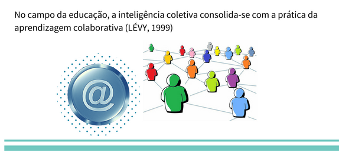
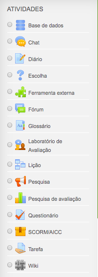
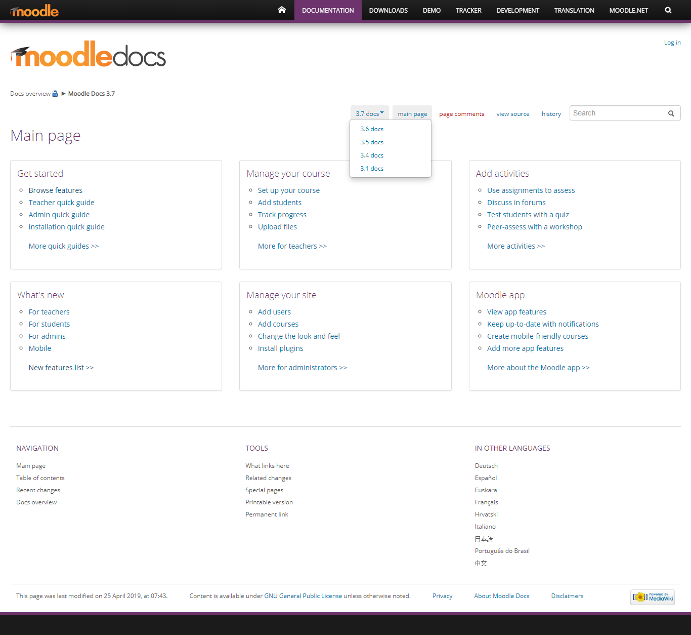

O que é o Moodle?
Entenda o que é Moodle, um dos ambientes virtuais de aprendizagens utilizado pelo Ifes, suas características e funcionalidades.
Índice
1 Tutorial do Recurso Livro
Antes de iniciar a leitura do livro, gostaríamos de apresentar um tutorial sobre o recurso de Livro.
2 Introdução do Moodle
O Moodle (Modular Object-Oriented Dynamic Learning Environment / Ambiente de Aprendizagem Dinâmico Modular Orientado a Objeto) é um sistema de Internet que concentra um conjunto de ferramentas de gerência pedagógica e administrativa de cursos, bem como um Ambiente Virtual de Aprendizagem (AVA).
Possui uma estrutura que permite usar ferramentas para criar áreas específicas e, também, facilitar o acesso dos alunos. Pode ser utilizado em diversos níveis da educação formal e da educação informal, tanto para atender um curso na modalidade a distância quanto dando suporte às atividades de cursos presenciais.
O Moodle foi criado em 2001 pelo educador e cientista computacional Martin Dougiamas e é uma plataforma de aprendizagem de código aberto utilizada mundialmente. De acordo com informações disponíveis no site moodle.com, existem mais de 224 milhões de usuários no mundo.
O Cefor - Centro de Referência em Formação e em Educação a Distância do Ifes utiliza o Moodle como Ambiente Virtual de Aprendizagem.
Mas o que é Ambiente Virtual de Aprendizagem?
Ambiente Virtual de Aprendizagem é um espaço caracterizado por uma interface que reúne diversas ferramentas computacionais que proporcionam a disponibilização de conteúdo, realização de atividades e interação entre as pessoas.
O AVA, sendo um recurso de imensas possibilidades na educação de modo geral, na Educação a Distância (EaD) tem produzido seus maiores impactos, possibilitando às pessoas estarem reunidas em uma sala on-line, com acesso a vários recursos disponíveis, tais como: textos, fóruns, chats, mensagens, vídeo, som, imagem, etc.
Assista ao vídeo "What is Moodle", a seguir, disponível no canal Moodle no Youtube.
Se a legenda não ativar automaticamente, siga o tutorial.
3 Funcionalidades do Moodle
As principais funcionalidades de caráter técnico do Moodle são as seguintes:
- Código aberto
O código-fonte aberto garante que você possa possuir seu site e seu conteúdo em seus próprios termos.
- Integração total
Possui recursos avançados de administração para integrá-lo perfeitamente a qualquer situação e com plataformas e serviços como, por exemplo, o sistema acadêmico de uma instituição de ensino.
- Customizável
Interface moderna que pode ser personalizada por meio de temas e configurações para adaptar o site às necessidades da organização dos alunos.
- Extensível
Milhares de plugins gratuitos criados pela comunidade estão disponíveis adicionando novas funcionalidades para apoiar alunos, professores e administradores.
- Acessibilidade
É possível criar conteúdo multimídia com suporte total para todos os alunos, seguindo os padrões comuns de acessibilidade, e adicionar plugins que permitem maior acessibilidade.
- Utilização em dispositivos móveis
Uso compatível em dispositivos móveis (telefones, tablets e laptops) com funcionalidade para os alunos.
- Analytics e acompanhamento
Permite monitorar os alunos com acompanhamento de conclusão aprimorado e planos de aprendizado personalizados, criados a partir de estruturas de competências e objetivos de aprendizado.
- Aprendizagem colaborativa
É possível promover atividades colaborativas utilizando diversos recursos, tais como mensagens, fóruns, atividades em grupo e experiências colaborativas diversas.
Fonte: adaptado de moodle.com/lms
3.1 Versatilidades de Funcionalidades
-
- Acesso restrito: login e senha pessoal fornecidos, individualmente, no início do curso;
-
- Módulos com conteúdos disponibilizados, organizados e distribuídos;
-
- Ferramentas interativas e colaborativas: Fórum, Chat, Glossário, Wiki;
-
- Ferramentas de avaliação: exercícios on-line de múltipla escolha, relacionamento de colunas, resposta numérica, resposta breve, banco de questões, verdadeiro ou falso e de preenchimento de lacunas, com correção automática, nota e gabarito;
-
- Ferramentas de monitoramento: Tarefa, Pesquisas de Opinião, Avaliação do Curso, Lição e Enquete.
-
- Utilização controlada e gerenciamento de acesso: Relatório de atividades com apresentação gráfica e em formato de lista.
Além disso, no Moodle existem muitas funcionalidades flexíveis, configuráveis e gerenciáveis pela Web, que interessam aos educadores e que podem suportar diferentes metodologias de EaD.
Você terá oportunidade de perceber que as ferramentas do Moodle possuem o potencial de promover uma interação de orientação sócio-construtivista entre os participantes.
A aprendizagem pode ser facilitada pelas colaborações e reflexões críticas dos participantes sobre diversos assuntos, com mediação dos professores, o que promove a interação e integração entre todos.
Os recursos disponíveis no Moodle podem ser aplicados como opção a uma educação virtual ou como suporte a atividades presenciais. Sua interface é clara e simples, compatível com qualquer navegador da Internet, o que facilita seu uso, inclusive para as pessoas inexperientes ou com pouco conhecimento de tecnologias digitais.
3.2 Plugins no Moodle
Além das funcionalidades que incluem recursos e atividades "nativos" do Moodle, o diretório do site Moodle.org disponibiliza diversos plugins adicionais que podem ser instalados de acordo com a necessidade dos usuários.
Um Plugin é simplesmente um programa de computador mais leve que pode ser adicionado para atender uma função específica e pontual. Por exemplo: o Bloco "Barra de Progresso" é um plugin que permite ao aluno visualizar, de forma gráfica em um bloco lateral, o seu progresso no curso. Este plugin também permite ao professor visualizar o relatório de todos os alunos de forma visual mais interessante do que no relatório padrão do Moodle.

Atualmente existem plugins de diversos tipos para o Moodle que incluem atividades, blocos, temas, formato de cursos e muitos outros.
Um outro exemplo de Plugin é o Bloco de Acessibilidade que usamos em nossa plataforma:

Vale a pena pesquisar e ver se existe algum plugin que atenda alguma necessidade específica do seu curso/disciplina.
4 Por que utilizar um Ambiente Virtual de Aprendizagem?
Algumas das principais vantagens de se utilizar um Ambiente Virtual de Aprendizagem são as seguintes:
- Maior comodidade e flexibilidade com relação a horários e lugares:
- Comodidade: suas atividades podem ser executadas em casa, no trabalho, na instituição de ensino ou em qualquer outro lugar de maior conveniência. Com a quebra das barreiras geográficas, a interação pode ser efetuada sem a necessidade de encontros com a presença física entre os participantes.
- Flexibilidade:
Cada participante pode atuar em ritmo próprio e em horário de sua
preferência, sem prejudicar o intercâmbio de conhecimento, pois as
ferramentas existentes em EaD permitem uma troca eficiente de
informações, pela sala de chat, dos fóruns ou dos emails.
“O ambiente virtual de aprendizagem vai desaparecer?
Veja a resposta de Martin Dougiamas, o Criador do Moodle
(Fonte: moodlelivre.com.br)
5 Papeis e visões no Moodle

O Moodle possibilita a inscrição dos usuários com diversos tipos de papeis, cada qual com diferentes possibilidades de acesso e permissões na execução das mais variadas atividades no ambiente.
Tanto a nomenclatura quanto as permissões de cada papel no Moodle podem variar de acordo com a política e determinação dos administradores de cada instituição. Todos os papeis são customizáveis e novos papeis podem ser criados, conforme a necessidade da instituição.
Vejamos a seguir um resumo das permissões e funcionalidades usadas no Cefor/Ifes:
- Administrador: É aquele que administra todo o ambiente, pode ativar e desativar todos os demais perfis. Possui todos os poderes de gestão do sistema;
- Professor Formador ou Conteudista: Edita o conteúdo inserindo, apagando e modificando qualquer conteúdo ou configuração de um curso. Faz a gestão da disciplina e coordena os professores mediadores (tutores).
- Professor Mediador ou Tutor a Distância: Professor que administra as rotinas de tutoria do curso: dar notas às tarefas dos alunos, monitorar atividades realizadas, participar dos fóruns e promove a mediação entre os alunos de maneira geral;
- Tutor Presencial: Professor que acompanha as atividades presenciais desenvolvidas pelos alunos nos polos de apoio presencial. Este trabalha em conjunto com o Professor Mediador.
- Aluno/Estudante: É um participante inscrito em um curso. Realiza as atividades propostas e colabora com os colegas no processo de aprendizagem. Alguns exemplos de atividades: responde a questionários, acessa o conteúdo, discute por meio de mensagens nos fóruns e opina por meio de enquetes, além de realizar diversas outras atividades.
6 Recursos do Moodle
Enquanto educadores, ao pensar nos recursos do Moodle, devemos pensar que Recurso é o que possibilita ao educador disponibilizar o conteúdo de seu curso ou disciplina da forma mais adequada.
Nesse momento é importante lembrar que o foco deve ser sempre o aluno e ter o cuidado para escolher os formatos mais acessíveis para todos.
Nas aulas presenciais é comum utilizar recursos como apresentação de slides e arquivos de texto ou .pdf, mas no virtual é preciso repensar essas opções de modo a facilitar a visualização do aluno, seja para que ele não precise fazer o download e possa ler em diversas plataformas como um dispositivo móvel ou para o aluno que precisa utilizar recursos de acessibilidade disponíveis no Moodle ou leitores de tela, por exemplo.
Assim, você vai ver que existem diversas opções para disponibilizar seu conteúdo e recomendamos a opção pelo formato mais acessível para todos.
Os recursos disponíveis podem variar de acordo com a versão do Moodle e plugins instalados em cada site.
Neste curso exploramos alguns recursos básicos, conforme você verá ao longo deste material.
A seguir, temos uma imagem dos recursos disponíveis no Moodle Ifes 3.1 (tela capturada em 14/07/2019):

A seguir apresentamos um breve resumo sobre cada um dos recursos disponíveis:
- Arquivo: Permite disponibilizar um arquivo (em vários formatos) diretamente na semana ou tópico do curso, para visualização e/ou download pelos participantes.
- Conteúdo do pacote IMS: Permite a reunião de vários conteúdos em um único pacote de arquivos com extensão ZIP, muito utilizado na construção de Objetos de Aprendizagem (OA).
- Livro: Normalmente utilizado para material textual. Exibe conteúdos divididos por capítulos e subcapítulos. Pode conter textos, links de sites/vídeos, imagens e outros elementos multimídia no intuito de torná-lo mais interativo.
- Página: Exibe uma página (semelhante a uma página Web) que pode conter textos, links de sites/vídeos, imagens e outros elementos multimídia.
- Pasta: Exibe uma pasta com vários arquivos, para consulta ou download pelos participantes. É utilizada para agrupar arquivos em local único, sem "poluir" a tela principal.
- Rótulo: Permite inserir textos, imagens e vídeos no meio dos links de uma semana ou tópico, ou seja, na tela principal. Pode ser utilizado como cabeçalho ou separador para melhor organização da sala no Moodle.
- URL: Disponibiliza um link para uma página da Internet.
7 Recursos de Acessibilidade
O Moodle do Ifes possui dois recursos de acessibilidade atualmente, que são o Plugin Bloco Acessibilidade (este permite aumentar ou diminuir a fonte, colocar contraste, por exemplo) e o Widget VLibras.
Ambos estão disponíveis nas duas versões do Moodle que utilizamos no Ifes.
Assista ao videotutorial a seguir para melhor utilização dos recursos:
8 Atividades do Moodle

Enquanto educadores, ao pensarmos na funcionalidade de inserir ATIVIDADES, esta é o que possibilita ao educador planejar e disponibilizar diversos tipos de atividades que podem ser realizadas no AVA e de acordo com a sua proposta metodológica.
Não podemos determinar que uma atividade seja mais fácil ou mais difícil, mas sim o quanto esta atividade está adequada ao contexto do curso, considerando, em especial: a abordagem pedagógica, a metodologia adotada; os objetivos de aprendizagem estabelecidos; os estilos de aprendizagem dos alunos; dentre outros aspectos que devem ser levados em consideração na escolha das mesmas.
É muito importante que o educador saiba identificar o uso adequado de cada atividade e que também possa inovar adequando as diversas possibilidades às necessidades pedagógicas do seu curso/disciplina.
Além disso, é importante identificar o potencial para a realização de atividades colaborativas no próprio AVA ou até mesmo qual é a melhor atividade a disponibilizar para o registro de uma atividade realizada fora do AVA, como uma atividade presencial ou uma produção de material como um vídeo, por exemplo.
As atividades disponíveis podem variar de acordo com a versão do Moodle e plugins instalados em cada site. Exploramos algumas atividades nativas de nível básico, conforme você verá ao longo deste material.
A seguir, temos uma imagem das atividades disponíveis no Moodle Ifes 3.1 (tela capturada em 14/05/2019)

A seguir apresentamos uma breve descrição de cada atividade disponível no Moodle:
- Base de dados: Permite aos participantes criar, manter e pesquisar uma coleção de itens (ou seja, registros). A estrutura dos itens é definida pelo professor como uma quantidade de campos. Os tipos de campo incluem caixa de seleção, botões de rádio, menu dropdown, área de texto, URL, imagem e arquivo enviado.
- Chat: Possibilita conversação síncrona (tempo real) entre os participantes.
- Escolha: Permite ao professor fazer uma enquete e especificar opções de múltiplas respostas. Os resultados podem ser visualizados depois que os alunos responderam, ou após uma determinada data pré-configurada. Também utilizada para a organização de grupos.
- Laboratório de avaliação: Possibilita a avaliação por pares de um trabalho sobre um tema escolhido, que pode ser um texto online, ou um arquivo enviado (pdf, vídeo, imagem, etc.), ou ainda ambos, podendo a avaliação ser feita pelo professor e pelos estudantes entre si, mediante um formulário de avaliação construído pelo professor.
- Fórum: É uma discussão assíncrona (tempos diferentes) sobre temas escolhidos pelo professor ou pelos demais participantes. Pode ser um único tema ou vários
- tópicos com temas diversos. É muito utilizada para debates e/ou para exposição de trabalhos/projetos.
- Glossário: Possibilita criar uma lista de termos e respectivas definições, envolvendo o conhecimento partilhado e a colaboração sobre determinado tema.
- Lição: É um conjunto de páginas que podem conter informações em vários formatos (texto, imagem, vídeo etc) para o aluno estudar e questões para serem respondidas ao longo da leitura.
- Pesquisa: Permite ao professor criar uma pesquisa personalizada para obter feedback dos participantes usando uma variedade de tipos de questões, incluindo múltipla escolha, sim/não ou entrada de texto. Permite o anonimato do respondente.
- Questionário: É um conjunto de questões de vários formatos. O mesmo é criado pelo professor, respondido pelo aluno e corrigido automaticamente pelo sistema (com base no gabarito e feedbacks previamente definido pelo professor). Pode configurar-se como uma atividade de auto-avaliação, uma lista de exercícios para verificação de aprendizagem, um teste rápido ou ainda uma prova virtual.
- SCORM e AICC: são coleções de especificações que habilita interoperabilidade, acessibilidade e reusabilidade de conteúdo baseado na WEB, permitindo com que pacotes SCORM/AICC sejam incluídos no curso.
- Tarefas: Permitem que os alunos submetam textos ou arquivos em vários formatos para avaliação pelo professor. As tarefas podem ser de envio de arquivo, de texto online ou off-line, dependendo da configuração escolhida. As tarefas off-line normalmente são utilizadas para registro de atividades presenciais ou que não requerem envio de texto ou arquivo.
- WIKI: Ferramenta para construção colaborativa de textos.
9 Aplicativo Moodle
Um dica muito importante para os alunos que usam o AVA Moodle é baixar a sua versão para celular, afinal é o dispositivo que sempre está conosco e podemos aproveitar qualquer momento livre para dedicação aos estudos. O aplicativo oficial da plataforma Moodle para Android e iOS é o Moodle Mobile. Este aplicativo está conectado ao Moodle e permite:
- navegar pelos conteúdos de seus cursos, mesmo off-line;
- receber notificações instantâneas de mensagens e eventos;
- entrar em contato com outras pessoas em seus cursos;
- fazer upload de imagens, áudios, vídeos e outros arquivos do seu dispositivo móvel;
- e muito mais!
Assim, para facilitar os seus estudos baixe o aplicativo Moodle Mobile no endereço: https://download.moodle.org/mobile/
O download também pode ser feito direta e gratuitamente na Google Play ou Apple Store.
Após o download do aplicativo será solicitado o endereço de acesso que, no caso dos cursos do Ifes, é: ava.cefor.ifes.edu.br
Atenção: para que o Moodle funcione no aplicativo é preciso que o administrador tenha habilitado essa função. Caso contrário, o cursista não conseguirá fazer o acesso pelo aplicativo mesmo digitando corretamente o endereço do Moodle da instituição.
IMPORTANTE: Você é aluno do Ifes e não está conseguindo acessar o seu curso pelo aplicativo Moodle Mobile? Segue um tutorial para ajudá-lo: Aplicativo Moodle Mobile não funciona? Aprenda como resolver
10 Moodle.org
Para quem busca informações sobre o Moodle e suas configurações, a melhor fonte é o site oficial Moodle.org.
No site você encontra informações e toda a documentação necessária para cada versão do Moodle. É uma fonte de pesquisa que serve para qualquer nível de usuário, sendo muito útil tanto para administradores quanto para professores.
Veja como pesquisar no site Moodle.org:
1) acesse o site: https://moodle.org/;
2) o site está em Inglês então, se necessário, ative a tradução no seu navegador;
3) na aba DOCUMENTATION ou DOCUMENTAÇÃO há opção de selecionar em qual versão do Moodle você quer pesquisar.
Visite o site sempre que necessário e divirta-se aprendendo muito sobre o Moodle!
